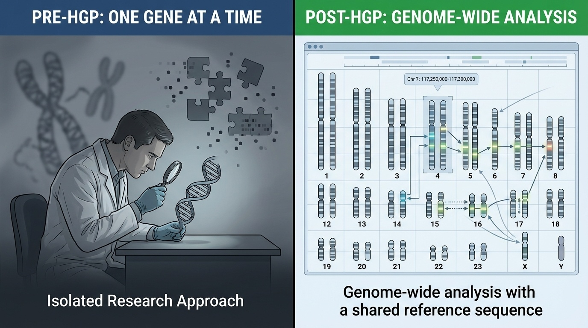
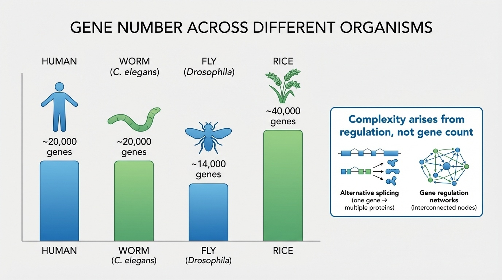
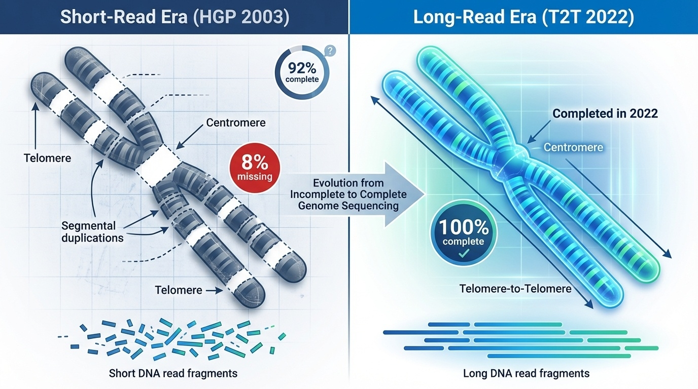

BSMS205 · Genetics
The Human
Chapter 1 · Part I · The Human Genome
Welcome to Chapter one of BSMS two oh five Genetics. Today we begin Part One, which is all about the human genome itself — what it is, how we mapped it, and why that mapping fundamentally changed biology. The story we are telling today is the Human Genome Project, the most ambitious biology project of the twentieth century. We will look at what genetics looked like before this project, what the project set out to do, how it actually played out across thirteen years and several countries, what it discovered that surprised everyone, and what it left for the next generation to finish. Let's begin.
A question to start with
Imagine a carmanual .
Here is the analogy I want you to hold in your head for the rest of this lecture. Imagine trying to understand how a car works by only looking at individual parts — a spark plug here, a piston there — without ever seeing the complete engine, and without ever having a manual. You could spend years on the spark plug. You could become the world expert on pistons. But you would never understand the car. That is essentially how genetics worked before nineteen ninety. We knew about individual genes. We had no map.
What we knew · what we didn't
Knew
Some disease genes (CF, sickle cell)
DNA carries information
Mendelian inheritance
Didn't know
How many genes humans haveWhere most of them sitWhat most DNA is doing
Let's contrast what was known and what wasn't, just before nineteen ninety. We knew some specific disease genes — the gene for cystic fibrosis had been cloned in nineteen eighty-nine, the gene for sickle cell had been understood for decades. We knew DNA carried genetic information. We had Mendel's laws of inheritance. But — and this is the embarrassing part — we did not know how many genes a human even had. Estimates ranged from fifty thousand to one hundred thousand. We did not know where most genes sat on chromosomes. And we had almost no idea what the rest of the DNA was doing. That is the gap the Human Genome Project set out to fill.
Each gene was a multi-year quest
Start almost from scratch for each new gene
Indirect methods to localize roughly
Narrow down bit by bit over years
Like searching for a house in a cityno map and no address .
Each new gene discovery required years of painstaking work. If you wanted to study a new gene, you started almost from scratch. You used indirect linkage methods to figure out roughly which chromosome it was on. Then you narrowed the location down using crosses, somatic cell hybrids, restriction maps. Each step took a paper, sometimes a thesis, sometimes a career. It was like being asked to find a specific house in a city without a map and without an address — only vague clues like "near the river" or "north of the cathedral." That is why the field needed something audacious.
The audacious goal
3,000,000,000
DNA base pairs · the entire human genome
One complete reference for all biology
The periodic table equivalent for genetics
Launched 1990 · originally a 15-year plan
In nineteen ninety, the Human Genome Project launched with one big number as its target: three billion DNA base pairs. The complete sequence of every nucleotide in a human genome. The framing the founders used was that this would be biology's equivalent of the periodic table in chemistry, or the standard model in physics — a foundational reference that any future researcher could use. The original plan was fifteen years, ending in two thousand five. As we will see, technology and a bit of competitive pressure ended up speeding it up significantly.
Roadmap for today
Why we needed a genome project
The four goals of the HGP
The journey · 1990 to 2003
The big surprise · only 20,000 genes
How it transformed genetics
What it left unfinished — the 8%
Summary & what comes next
Here is how we will move today. First, we look at why the field needed a genome project at all — what the pre-HGP world actually felt like. Second, we walk through the four interconnected goals the project set itself. Third, we follow the journey from nineteen ninety to two thousand three, including the famous race with Celera. Fourth, we look at the most surprising single finding: humans have only about twenty thousand genes. Fifth, we examine how the project changed how genetics is done — from gene-by-gene to genome-wide. Sixth, we look at what the HGP could not finish — the eight percent of the genome that remained as gaps until the T2T project finished it in twenty twenty-two. And finally, we wrap up. Let's begin.
§ 1
Before
Let's spend a few minutes painting the picture of what genetics actually looked like before the genome was sequenced. Understanding this is essential — without it, the impact of the HGP looks merely impressive instead of transformative.
One gene at a time
Each gene = a multi-year project
No standard coordinate system
No way to compare findings across labs
Most of the genome was literally unknown
The defining feature of pre-HGP genetics was that everything happened one gene at a time. Each gene was its own multi-year project. There was no shared coordinate system, so when one lab said "this gene is somewhere on the long arm of chromosome seven," another lab had to do its own work to confirm what "somewhere on the long arm of seven" even meant. There was no easy way to compare findings across labs. And most of the genome — the vast majority of it — was simply unknown territory. Every paper opened a small window. The HGP would open the whole house at once.
The transformation in one picture

Figure 1. Pre-HGP (left): gene-by-gene research with no shared map. Post-HGP (right): all genes accessible on a shared coordinate system. Like switching from local landmarks to GPS.
Here is the transformation in a single picture, from the textbook. On the left, the pre-HGP world: scientists studied individual genes in isolation, with no comprehensive map. On the right, the post-HGP world: every gene is reachable, and every researcher uses the same coordinate system. The analogy I like is that pre-HGP genetics was like asking someone for an address using local landmarks — turn left at the bakery, three doors past the church. Post-HGP genetics gave everyone GPS coordinates. Suddenly, every result was reproducible, addressable, and comparable. That is the shift.
§ 2
Four
The Human Genome Project was not a single goal. It was four interconnected goals, each of which would have been a major project on its own. They reinforced each other. Without one, the others would have been less useful. Let's walk through them in order.
Goal 1 · Sequence the entire genome
Determine the order of all ~3 billion nucleotides
Output: a single reference sequence
A standard "text" for locating genes & comparing genomes
The first complete map
The first goal was the obvious one: read every letter. Three billion nucleotides — A, T, G, C — in their correct order. The output would be a single reference sequence that the entire field would share. Imagine drawing the first complete map of an unexplored continent. After you draw it, every future explorer can use it to navigate, mark new discoveries, and share findings. Before the map, every team made their own sketch. After the map, everyone is reading from the same sheet.
Goal 2 · Identify all human genes
The expectation
~100,000
genes (some predicted)
The reality (spoiler)
~20,000
genes
A surprise that changed our view of biology .
The second goal was to catalog every human gene. Before the project, estimates ranged wildly. Some predicted fifty thousand. Others guessed as many as one hundred thousand. The intuition was simple: humans are complex, so we must have many more genes than worms or flies. Spoiler — that intuition was spectacularly wrong. The final answer was about twenty thousand. We will come back to why this matters in section four. For now, just notice: even the people running the project did not know how many genes they were looking for.
Goal 3 · Drive new technologies
1990: sequencing one gene took months
3 billion bases at that pace → centuries
HGP forced advances in sequencing , robotics , computing
The technology push was as important as the science
The third goal — easy to overlook, but central. In nineteen ninety, sequencing was slow, expensive, labor-intensive. Sequencing one small gene could take months. At that pace, three billion base pairs would take centuries and cost billions. So the project deliberately included a technology development arm. New sequencing chemistries, automated sample handling, robotics, computational tools to assemble millions of short fragments. The HGP did not just buy existing technology — it forced an entire technology revolution to get its job done. That revolution did not stop in two thousand three. It is the reason a genome today costs less than a thousand dollars.
Goal 4 · Map genetic variation
The reference is one sequence — but humans differ
Catalog landmarks: SNPs · single-letter differences
Use them as mile markers on each chromosome
Link variants → diseases, traits, ancestry
The fourth goal was about variation. The reference is a single sequence, but humans vary. The most common kind of variation is the single nucleotide polymorphism, or SNP — a single-letter difference between individuals. The HGP set out to catalog these landmarks across the genome and use them as mile markers on every chromosome. Once you have these markers, you can ask: do people with a certain disease share a particular pattern of markers? That question is the seed of every genome-wide association study we will discuss later in this course. None of that is possible without a reference and a map of variation.
Four goals · one infrastructure
Figure 2. The HGP was not just sequencing — it was infrastructure: reference sequence, gene catalog, technology platforms, variation map. Each goal made the others more useful.
Here are the four goals in one picture. Notice how they reinforce each other. The reference sequence is more useful with a gene catalog. The gene catalog is more useful when you can sequence cheaply. Cheap sequencing is more useful when you have markers to compare against. The HGP was not just a sequencing project — it was an integrated infrastructure project. That is why its impact lasted decades, and why every genomic project since has built on it.
§ 3
The Journey
Now let's walk through how the project actually played out across thirteen years. There are five moments worth knowing in detail. The practice years, the chromosome twenty-two milestone, the race with Celera, the simultaneous publications, and the official completion.
1990 – 1998 · learning by doing
Did not jump straight into human DNA
Practiced on E. coli , yeast, C. elegans
Worm genome completed 1998
Built the methods and the muscle
The first eight years are often glossed over, but they were essential. The project did not jump straight into human DNA. Instead, scientists practiced on simpler organisms with much smaller genomes — bacteria, yeast, and the roundworm C. elegans, which was completed in nineteen ninety-eight. These were not warm-ups for show. They were how the field learned to assemble genomes, run quality control, and develop the computational tools that would later be needed for the human assembly. By nineteen ninety-eight the methods were ready. The muscles were trained. Human DNA was next.
1999 · first complete human chromosome
22
chromosome 22 · the first to finish
One of the smallest autosomes
Proved the methods worked at human scale
A test case for the rest of the genome
Nineteen ninety-nine. First major milestone. Researchers completed the sequence of human chromosome twenty-two — one of the smallest of the autosomes. That achievement mattered for two reasons. First, it proved the methods that worked on yeast and worms also worked on human DNA at chromosome scale. Second, it was a credible test case. If chromosome twenty-two could be done, the rest of the genome was just more of the same. Momentum started to build.
2000 · the race
Public HGP
International consortium
Hierarchical, careful
Open data within 24 h
Celera Genomics
Private · Craig Venter
Whole-genome shotgun Faster · proprietary
June 2000: both announce ~90% draft. Joint Clinton–Blair press conference.
Two thousand brought a plot twist. A private company, Celera Genomics, led by Craig Venter, announced it would beat the public consortium to the genome using a different, faster method called whole-genome shotgun sequencing. This created both rivalry and synergy — the public project sped up, Celera kept pushing, and in June of that year both groups simultaneously announced draft sequences covering roughly ninety percent of the genome. President Bill Clinton and British Prime Minister Tony Blair held a joint press conference celebrating the achievement. It was framed as a tie, even though the technical and ethical differences between the two efforts were substantial. The public consortium released its data immediately. Celera kept some of theirs proprietary.
2001 · two papers, two journals
Nature
The public consortium
Open data, open method
Science
Celera
Whole-genome shotgun
Drafts — not finished . Gaps and errors remained, especially in repeats.
February two thousand one. The papers landed. The public HGP published in Nature. Celera published in Science. Both were drafts — not finished sequences. There were gaps. There were errors, especially in repetitive regions. But for the first time in history, scientists had a working draft of the entire human genome on their desks. The implications would take years to unfold, but the impact was immediate. Every genetics paper from then on referenced the draft genome.
2003 · the "finished" genome
Announced April 2003 · 50 years after Watson & Crick
99% of euchromatic regions sequencedError rate < 1 / 100,000 bases
Released as GRCh37 , later GRCh38 (hg38)
April two thousand three — a date deliberately chosen to mark the fiftieth anniversary of Watson and Crick's structure of DNA. The HGP announced completion. About ninety-nine percent of the gene-containing portions of the genome — the so-called euchromatic regions — had been sequenced to high accuracy, with an error rate of less than one mistake per one hundred thousand bases. The finished genome was released as GRCh thirty-seven, later refined to GRCh thirty-eight, also called h g thirty-eight. That is the reference genome that has been used worldwide for the past two decades. Almost every genetic study published since two thousand three points to coordinates in this reference.
Timeline at a glance
Year Milestone
1990 HGP launches · 15-year plan 1995–98 Practice on E. coli , yeast, C. elegans 1999 Chromosome 22 finished 2000 Draft (~90%) · public + Celera 2001 Drafts published · Nature & Science 2003 "Finished" · 99% euchromatin · GRCh37 2013 GRCh38 released 2022 T2T-CHM13 closes the remaining 8%
Here is the full timeline at a glance. Notice how compressed the storytelling has been. Eight years of practice, one chromosome in nineteen ninety-nine, drafts in two thousand to two thousand one, completion in two thousand three. Then a decade of refinement — GRCh thirty-eight in twenty thirteen — and then a twenty-twenty-two coda from the Telomere-to-Telomere project, which we will cover in chapter two. Look at the bolded years. Two thousand. Two thousand three. Twenty twenty-two. Those are the moments where the field changed shape.
§ 4
Only
Now the most surprising single discovery of the project. Going in, the field expected fifty thousand to one hundred thousand genes. Coming out, the answer was about twenty thousand. That number was small enough to embarrass an entire field, and important enough that it changed how we think about complexity.
The final count
~20,000
protein-coding genes in the human genome
Predicted: 50,000 – 100,000
Reality: ~20,000 – 25,000
The expectation had to be thrown out
Here is the final count, dropped onto the slide so it cannot be ignored. About twenty thousand protein-coding genes. The pre-HGP textbooks predicted fifty thousand to one hundred thousand. The intuition behind that prediction was simple: humans are complex, so we must have a lot of genes. That intuition turned out to be wrong, and the realization forced a generation of geneticists to rebuild their mental models from scratch.
Gene count vs complexity
Organism Genes Comment
Human ~20,000 You are reading this Roundworm (C. elegans ) ~20,000 959 cells, no brain Fruit fly (D. melanogaster ) ~14,000 Compound eye, simple nervous system Rice (O. sativa ) ~40,000 Twice as many as us
Rice has twice as many protein-coding genes as you do.
And here is the cross-species table that broke everyone's intuition. Humans, twenty thousand genes. The roundworm C elegans, also about twenty thousand — a creature with nine hundred fifty-nine cells, no brain, less than a millimeter long. Fruit fly, fourteen thousand. Rice — yes, the plant — about forty thousand genes. Twice as many as a human. Stop and let that land for a moment. Rice has twice as many protein-coding genes as you do. Whatever makes humans complex, it is not the raw count of genes.
So what makes humans complex?
Alternative splicing — one gene → many proteinsGene regulation — when, where, how muchRegulatory networks — combinations of inputsNon-coding sequence — controls everything above
Complexity comes from orchestration , not inventory.
If it is not the gene count, what is it? Four answers, and they are all on this slide. First, alternative splicing — a single human gene can produce many different protein versions, by reading the gene in different ways. Second, sophisticated gene regulation — when, where, and how much each gene is expressed. Third, regulatory networks that combine many inputs to control output. And fourth, a vast non-coding genome that controls all of the above. The headline is this: complexity is about orchestration, not inventory. You do not need more instruments, you need a richer score and a better conductor.
Only 1.5% codes for protein
1.5%
of the genome encodes proteins
The other 98.5% : regulatory, structural, repeats
Once dismissed as "junk DNA"
Now: hotspot of regulatory function
Here is another number that was stunning at the time. Only one and a half percent of the human genome actually encodes proteins. The other ninety-eight and a half percent is regulatory sequences, structural elements, and repetitive DNA. For a long time, this non-coding majority was dismissed with the unfortunate label "junk DNA." That label was a mistake. Two decades of follow-up work has revealed that much of the non-coding genome is functionally important — turning genes on, turning them off, controlling the cell type they are expressed in, the time of day, the developmental stage. We will spend whole lectures on regulation later in the course.
The picture, in one figure

Figure 3. Humans (~20k) ≈ worms (~20k), < rice (~40k). Complexity comes from regulation and splicing, not gene count.
Here is the picture in one figure. Bars by species, gene count on the y-axis. Humans and worms tied. Rice ahead. Fruit fly behind. The visual makes the point as starkly as a sentence ever could. Whatever biological complexity is, it is not bar-chart-bar gene count. The HGP did not just answer how many. It quietly killed the assumption that the question was the right one.
§ 5
How It Changed
Now let's zoom out and ask: how did the HGP change how genetics is actually done? Four changes, each a quiet revolution in its own right.
From gene-by-gene to genome-wide
Pre-HGP
One gene at a time
Years per gene
Indirect localization
Post-HGP
All 20,000 genes at onceCompare cancer vs normal: every gene
RNA-seq, GWAS, exome studies
Change number one: scale. Pre-HGP, one gene at a time, years per gene. Post-HGP, all twenty thousand genes simultaneously. To ask which genes are different in cancer cells versus normal cells, you no longer pick a candidate — you measure all twenty thousand at once. That single shift opened up entirely new categories of research, including R N A sequencing, genome-wide association studies, and exome-wide rare variant studies. We will see all of these in this course.
A common reference · GPS for the genome
Every variant has an address: chr7:117,559,593
Any researcher can look it up , replicate , extend
Made GWAS possible — thousands compared on the same axis
Disease gene discovery: years → months
Change number two: shared coordinates. After the HGP, every variant has an address. C h r seven, position one one seven five five nine five nine three. That is not just a number — it is a global reference that any researcher anywhere can look up, replicate, or extend. This is what made genome-wide association studies possible — comparing thousands of people on the same coordinate axis to find disease genes. Disease gene discovery, which used to take a decade, started taking months. The pace of discovery itself accelerated by orders of magnitude.
The cost crash
Year Cost per genome Note
1990 ~$3 billion Estimated · pre-HGP technology 2003 ~$300 million HGP completion 2008 ~$1 million NGS arrives Today < $1,000 Routine in clinics
Cost dropped faster than Moore's Law .
Change number three: cost. This is the most quotable improvement in the history of biology. In nineteen ninety, sequencing one human genome would have cost roughly three billion dollars. By two thousand three, the HGP itself cost about three hundred million. By two thousand eight, with the arrival of next-generation sequencing, it was around a million. Today, less than a thousand dollars, and dropping. That curve is steeper than Moore's Law. It is the reason genome sequencing has moved from research labs into clinics — diagnosing rare diseases, guiding cancer treatment, predicting drug responses. None of that would be plausible without the HGP-era technology push.
The Bermuda Principles · open data
All sequence data released publicly24 hours of generation.
Agreed at a 1996 meeting in Bermuda
No patents · no paywalls · no waiting for publication
The genome belongs to everyone
Set the cultural standard for genomics ever since
Change number four — and arguably the most important culturally. In nineteen ninety-six, project leaders met in Bermuda and agreed on what came to be called the Bermuda Principles. All sequence data would be released to the public within twenty-four hours of generation. No patents. No paywalls. No waiting until the paper was published. That was revolutionary. Most fields hoard data until publication. Genomics decided otherwise. The genome belongs to everyone, and its sequence should be freely available to accelerate discoveries. That principle shaped every major genomics project that followed: the one thousand Genomes Project, T C G A, gnomAD, T2T. Open data is not a coincidence in genomics. It was a deliberate cultural choice in nineteen ninety-six.
§ 6
The 8%
Now for the part of the story that often gets forgotten. The HGP, despite its triumphs, did not finish the genome. About eight percent remained as gaps. Understanding why those gaps existed — and where they were — is the bridge to chapter two.
Where the gaps were
Centromeres · highly repetitive chromosome centersTelomeres · repetitive caps at chromosome endsRibosomal DNA arrays · hundreds of near-identical copiesSegmental duplications · large, near-identical blocks
~240 million base pairs · not "junk" — essential.
Where were the gaps? Four kinds of regions. Centromeres — the highly repetitive DNA at the centers of chromosomes, essential for cell division. Telomeres — the repetitive caps at chromosome ends. Ribosomal DNA arrays — hundreds of near-identical gene copies needed for ribosome production. And segmental duplications — large blocks of nearly identical sequence scattered across the genome. Together these add up to roughly two hundred forty million base pairs. That is not a rounding error. And these are not junk regions. Centromeres are essential for cell division. Ribosomal DNA copy number affects protein synthesis. Segmental duplications are hotspots for disease-causing rearrangements. They mattered. They were just hard.
Why the gaps existed
Short reads cannot span
HGP technology read DNA in short fragments
Identical repeats look the same → can't be placed
Like a book with many pages all reading: "and then they walked"
Why couldn't the HGP just finish those regions? The answer is technological. The sequencing methods of the era read DNA in short fragments — a few hundred bases at a time. To assemble a genome, you align overlapping fragments and walk along. But if many fragments look identical, you cannot tell where each one belongs. It is like trying to assemble a book where dozens of pages read exactly the same — you know the pages exist, but you cannot tell where they go. Short reads cannot span long, near-identical repeats. End of story for the centromeres in two thousand three.
Short reads vs long reads

Figure 4. Left: HGP-era short reads leave gaps in repetitive regions. Right: long-read sequencing (T2T, 2022) closes those gaps and produces the first truly gapless human genome.
Here is the picture from the textbook. On the left, the HGP era and its short reads — the repetitive regions show up as gaps because no single read can span them. On the right, the long-read era — molecules tens or hundreds of thousands of bases long, easily spanning even the longest repeat arrays. That single technological shift is what allowed the Telomere-to-Telomere consortium, in twenty twenty-two, to close the eight percent that the HGP could not. We will spend all of chapter two on that story. For today, just hold this in your head: the HGP did not fail at the centromeres. It just used the wrong wavelength of light to see them.
§ 7
Summary
Let's pull the threads together.
What to take away
HGP 1990 – 2003 · 3 billion bp · public + Celera
Four goals: sequence · catalog · technology · variation
Surprise: only ~20,000 genes; complexity = regulation
Cost: $3 B → < $1,000 · Bermuda Principles
~8% gaps remained — closed by T2T in 2022
Five things to take away. One — the HGP ran from nineteen ninety to two thousand three, sequenced about three billion base pairs, and was a parallel public-and-private effort with the public consortium and Celera. Two — its goals were four interconnected pieces: a reference sequence, a gene catalog, a technology revolution, and a variation map. Three — the most surprising single finding was that humans have only about twenty thousand genes, not the fifty to one hundred thousand expected, and that biological complexity comes from regulation and splicing, not gene count. Four — the cost of sequencing crashed from billions to under a thousand, and the Bermuda Principles established open data as a cultural norm in genomics. Five — about eight percent of the genome, mostly repetitive regions, remained as gaps until the Telomere-to-Telomere project finished them in twenty twenty-two. Hold those five points; everything else you will read about the HGP fits inside them.
Next lecture
If 99% was already done,finish it?
Chapter 2 · The Telomere-to-Telomere Project
One question to leave you with. The HGP finished ninety-nine percent of the gene-containing regions in two thousand three. Why would anyone bother finishing the last eight percent two decades later? What is in those repeats that matters? Why did it take long-read sequencing — and a peculiar cell line called CHM thirteen — to do it? That is the story of chapter two, the Telomere-to-Telomere Project. See you next time.